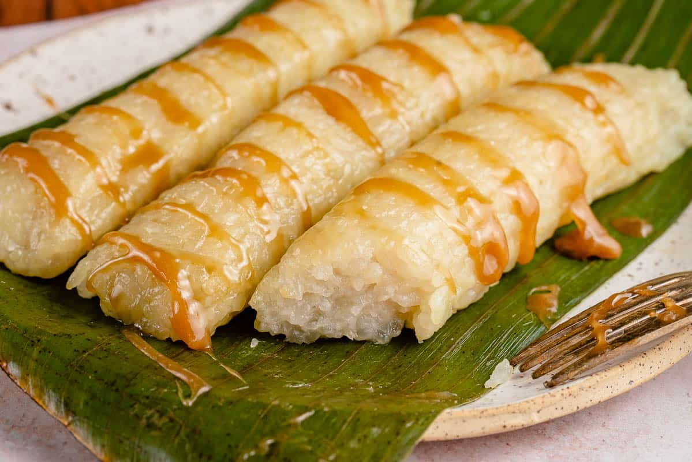
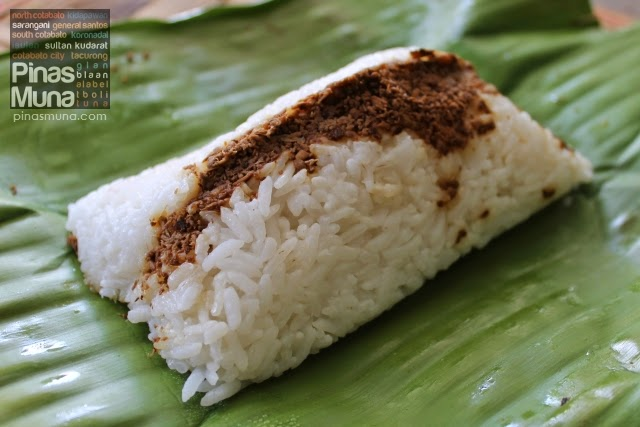
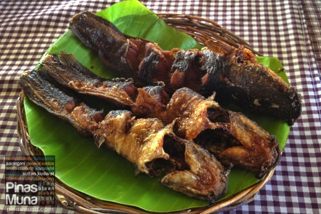
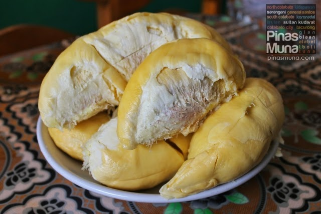

Flavors of Sultan Kudarat
Sticky rice cakes wrapped in banana leaves, served during festivals and special occasions.

Rice with shredded meat, wrapped in banana leaves, a local favorite for breakfast or snacks.

Fresh tuna, prawns, and other seafood from the Celebes Sea, popular in coastal towns.

Desserts influenced by Visayan and Moro traditions, often served during festivities.
